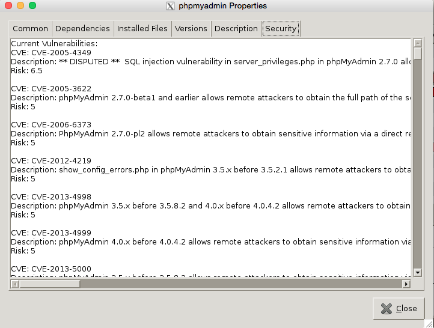

Introduction:A package manager is a program that allows users to browse, install, update, and remove packages from their computer. Until this point, there was no package manager which communicated the security risks of packages directly to the user. The aim of this project was to integrate package security information into an existing package manager in a way that allows users to make informed decisions regarding the security risks of what they put on their machine. We chose Synaptic, a visual package manager based on APT for Debian and its derivatives. Synaptic offered a GUI that was easily expanded to show our security information meaningfully. |
Data:Vulnerability data is handled on a specified repository with which our package manager communicates. The server grabs and formats data into a readable JSON format that the package manager downloads and uses for display. Data is taken from multiple sources and described as either Type 1 or Type 2. The former describes a current vulnerability to a package and the latter describes a patched vulnerability that may or may not affect the current user’s version. Type 1 data is retrieved from https://security-tracker.debian.org/tracker/, and is automatically kept up to date for the user. Type 2 data comes from multiple sources, including changelog information, the National Vulnerability Database, and a snapshot of data from another computer science student at UMD. We do not keep these up to date for the user, but this functionality wouldn’t be hard to implement with some maintenance. The server gathers all Type 1 and Type 2 data and parses it into JSON bundles for each package, sending it to the package manager on request. Our program then parses and distributes risk data based on the current versions of packages that the user has on their machine and displays this information accordingly. |
Display:Main Window with new columns: Risk Score, Installed Risk, and Change in Risk We’ve added three columns to the main window of Synaptic. The first displays the “Risk Score” of a package, gathered from cvss data, displaying a colored bar image that represents the risk of the most recent version of a package. Bars become more full and move from green to red, signifying the riskiness of that version. The second column has the same bar display, but for the risk score of the installed version on the user’s machine. The third column displays a delta risk, meaning the change, positive or negative, of risk that will occur upon updating your current version of a package. Grey bars are used for packages where no security data is found. Users can sort packages based on all three column values. Dependency Risk Since many packages have dependencies, the risk of installing a package includes the risk of the programs it depends on. Risk of dependencies is displayed with the same bar scheme, and can be found when installing or looking at package properties. Main Window with Security Tab selected  Security Tab in package properties Text descriptions of a package’s security information can be found on the main window in the security tab, or in the security tab of a package’s properties window. This text displays up to three things: the vulnerabilities affecting the latest version of the package, the vulnerabilities fixed by updating to the newest version if the user has an old version, and a list of all past patches made to the package that have security value associated with them. Conclusion/Overview:Overall, we’ve created an effective way to meaningfully display security data to users of our package manager. |
Contributors:Neelkush Vadalia (neelkush@gmail.com)Jake Fried (friedj@terpmail.umd.edu) Ben Seemann (bseemann@terpmail.umd.edu) Vincent Sui (zehaosui@gmail.com) Devin Gajewski (resdm123@gmail.com) Phil Austin (paustin@terpmail.umd.edu) Liam White (personman700@gmail.com) Ali Eskandari(alieskandari3@gmail.com) |